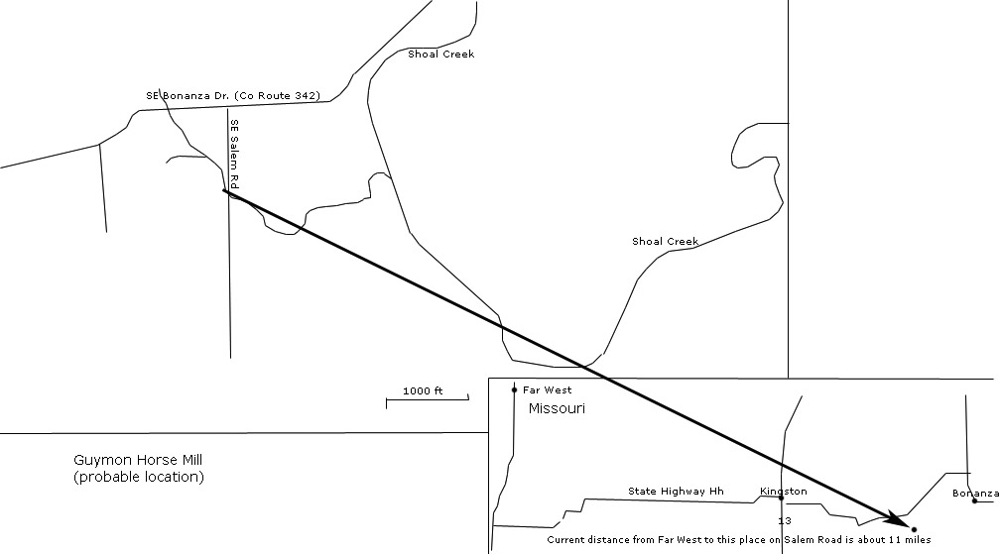

Chapter 2
To be born, grow up and learn life amidst the trying and blessed times that existed through the early years of the restoration of the Gospel of Jesus Christ! Such could mold the character to make one great. But that, by itself, was not sufficient to shape a man into a person of integrity, kindness and strength. Lorenzo Wesley Roundy had such an environmental experience, but we can judge from his life and dedication to truth and goodness, that he let the Lord shape him to be kind, honest and strong, in spite of and because of his life's experiences and the influences of those good people around him: family, friends and church leaders. This history is an attempt to portray the strength, kindness and influence that was the man: Lorenzo Wesley Roundy.
Lorenzo Wesley Roundy was born on the 18th of June, 1819, in Spafford, New York. He was the third child of Shadrach and Betsey Quimby Roundy. The Roundy family lived in the Finger Lakes region of upstate New York. It is interesting to note that less than a year following his birth, less than 65 miles to the west, the Prophet Joseph Smith experienced his First Vision. Shadrach was a farmer and had built some acreage over the years establishing a farm of about 200 acres by this time. It can be assumed that as Lorenzo grew up, he was busily engaged in working on the farm.
The Roundy family, including the close relatives living in Spafford, were all involved in the local Free Will Baptist Church, he having been elected as a member of the Board of Trustees. Shadrach was known to study the Gospel with family and friends in the church there. Being in such close proximity to Palmyra and Fayette, New York, where Joseph Smith lived and the church was being formed, it is natural that the spreading of the word of the Restoration of the Gospel reached the town where the Roundy family lived. Some influence came even before the Church was officially organized in April 1830. Several people came through Spafford over the next few years, bringing the Book of Mormon with them. When the Book of Mormon came to town, Shadrach was among those who sat together, read and discussed the book. They were convinced that it came from God. Shadrach's family was ready to accept the restored Gospel and be baptized when missionaries came through Spafford.
According to reports and records of those who ministered in the area, Shadrach was baptized on January 30, 1832, by William McLellin in Kirtland, Ohio. Later in the year, Lorenzo's mother, Betsey was baptized on May 20th, in Spafford, by either Samuel H. Smith or Orson Hyde. Four days prior to this event, Shadrach was ordained an Elder in the Church. Young Lorenzo was almost thirteen years of age at this time. It is not known when Lorenzo was baptized. Based on his later experiences and church ordinances, we know he was baptized sometime between 1832 and 1837 when the family was in Missouri.
Sometime later in the year 1832, the Roundy family moved to Elk Creek, Pennsylvania, near Lake Erie. By this time, Lorenzo's family included 8 children. With him being one of the oldest, it can be assumed that Lorenzo was depended upon to help with the establishment of the new home and farm. Shadrach was very concerned about his support for the family. It is reported in the minutes of a council of Elders, held in Kirtland on 18 December 1832, Shadrach expressed this concern, especially with relation to an expectation of him serving as a missionary, leaving his family. It is reported that Shadrach arose stating, "His object in coming here was to get council, as he had previously been ordained & having a witness of the Spirit that it was of God and was willing to go forth and proclaim the gospel, but stated to the council that his family stood in need of his labor for their support of no other way could be devised." He was advised to follow the "dictates of the Spirit." 1Shadrach remained with his family.
Lorenzo and the rest of the children undoubtedly learned of the dedication of their parents in serving the Lord and experienced opportunities of great value. In the following autumn, on October 8, 1833, Joseph Smith reports that he and others, on their way to a proselytizing mission to Canada, stopped and visited with the Shadrach Roundy family in their home in Elk Creek. Again a few months later, on 27 Feb. 1834, Joseph Smith again reports visiting with the family in Elk Creek, this time on their way east to recruit funds for Zion. As Lorenzo experienced these visits from the prophet Joseph Smith and others, he was about the age Joseph Smith was when he received his first vision. We can assume that these spiritual blessings had a great affect on him and his siblings.
The Roundy family moved again in 1835, this time to Willoughby, Ohio, nearer to Kirtland. While in Pennsylvania, Shadrach was able to travel periodically to Kirtland to attend meetings and be involved with church business there, but it is likely that the family needed to be closer to the church, so they moved. Willoughby is about 3 miles WNW of Kirtland. While in Willoughby, it is reported in the Joseph Smith records that the family was again visited by Joseph Smith. This was on October 31, 1835, and was on a day when Joseph Smith had some difficult times with his brother, William. In the report, he (Joseph Smith) reports his prayer to "my heavenly father to open their eyes that they may discover where they stand (meaning his brothers, William and Samuel)." 2 He then mentions going out after dinner, in company with his wife, children and brother, Don Carlos, and others, to visit Shadrach Roundy and family, having "an interesting visit." It can only be imagined the effect this would have on Lorenzo and his brothers and sisters, spending time with the Prophet Joseph Smith and his family. If this was an interesting visit for the Prophet, imagine what it was for Shadrach's family.
These were difficult times for the saints in Kirtland. They were sacrificing and working hard to build the temple. The construction of the temple began in mid-1833, so the Roundy family probably was not very involved with actual labor in the construction until this time in the last half of 1835. Since Lorenzo was 16 years old, it is possible that he could have been called upon to help. It is evident from church history and from Joseph Smith's own journal, that the prophet Joseph Smith was in difficult financial standing at the end of 1835. A number of people gave him donations of money and goods at this time, including, as mentioned in Joseph Smith's journal, "Elder S Roundy brought me a quarter of beef and may all the blessings, that are above named, be poured upon their heads, for their kindness toward me —" 3 Undoubtedly, as one of the older children in a large family, Lorenzo was probably well aware of the significance of this offering to help the prophet and might even have cared for the animal that was slaughtered for this purpose.
As the time drew near for the dedication of the Kirtland temple, we can expect that the Roundy family was involved with the anticipation and participation in the glorious events that took place. The Prophet Joseph Smith dedicated the Kirtland Temple on March 27th 1836. Since the family lived only 3 miles away, we can expect that they were participants, especially considering Lorenzo's father, Shadrach, received washings and anointing in the temple earlier that year in January. The following weeks were glorious ones for the saints in the Kirtland area. It is reported by Eliza R. Snow that "an abiding holy heavenly influence" was present and "many extraordinary manifestations" were experienced.4
Trouble was well underway in Missouri by this time as the saints in that part of the land were driven out of Jackson County and were settling Daviess and Caldwell counties, Caldwell County having been recently formed for the purpose of home for the saints. Trouble was at hand in Kirtland as well as the church including Joseph Smith, were deep in debt. He attempted to form a bank to better manage the finances and debts of the church. The foundation of the bank was based mainly on the land values of the area. This met with difficulty and eventually ended up in financial ruin. Whether this affected the Roundy family it is not known, but the family moved to Missouri sometime in the middle of 1837. The first reference to the family there referred to Shadrach in in the Guyman Horse Mill area.5

Life in Missouri was exciting, both in the positive and the negative sense. Lorenzo's sister, Julia Rebecca, was married there on September 19, 1837 to Joshua Whitney. Julia was twenty, two years older than Lorenzo. The Prophet Joseph Smith and his family moved from Kirtland to Far West, Missouri on March 14, 1838, which was about 8 miles WNW of Guyman Horse Mill (11 miles by current roads). There is nothing recorded directly referring to Lorenzo during the time the family lived in Missouri, but we know that conditions worsened to the point of the saints being driven out of the state by the spring of 1839. Shadrach was on a seven-member committee formed in January of 1839 to help move the poor saints out of Missouri. We expect that his family was already in Illinois, but that is not known. It is likely that Lorenzo and Lauren (his brother) helped get their family out.
It is possible that the family lived in Warsaw, Illinois for a while before going to Nauvoo (according to family tradition)6. The first definite indication of Lorenzo in Nauvoo is the 1840 census, where two males are listed in the 20-30 age range. The first reference by name is on March 21, 1841 when he is listed as a priest in an "Ordinance on Religious Liberty."7 Another census was taken in the spring of 1842 where Lorenzo is listed.8 In the Nauvoo Illinois Tax Index for 1842, Lorenzo Roundy is listed on page 230 with the coordinates of 6N8W.
1 Mounteer, "Shadrach and Betsey Roundy- Their Roots and Their Legacy,"p 79.
2 "The Joseph Smith Papers, Vol. 1, p 81.
4 Tullidge, Women of Mormondom, p 99 - as quoted in "The Joseph Smith Papers, Vol. 1, p 223
5 Mounteer, "Memorial Service for Lorenzo Wesley Roundy ", p 4
6 Mounteer, "Shadrach and Betsey Roundy- Their Roots and Their Legacy,"p 112.
7 Nauvoo Aaronic Priesthood Rolls 1841-1845, as referenced by Renée Mounteer in "Shadrach and Betsey Roundy- Their Roots and Their Legacy"